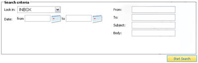

The Search page allows you to search all your folders, including your Inbox, for messages matching one or more keywords. All common fields, including
sender, recipient, subject, as well as the message body itself, are reviewed when you initiate a search.

The results of your search will appear in a normal folder template.